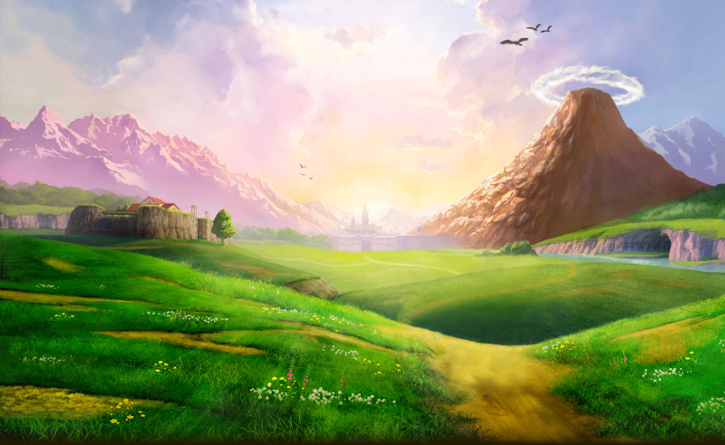
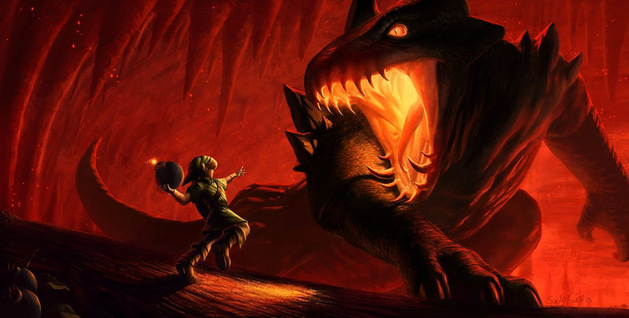

Kokiri Forest
Fale com todos, uma vez que a Deku Tree morreu. Estranhamente, Saria não poderá ser encontrada. Use a saída da direita onde você encontrará Saria, ela dará a você a Fairy Ocarina, uma forma de Link lembrar-se dela. Continue pela Kokiri Forest, chegando aos campos de Hyrule.
Hyrule Field
Uma coruja dará a você um Map of Hyrule. Agora, cruze o mapa para o norte, chegando ao Market (Na parte baixa do Hyrule Castle). Se você tentar isso durante a noite, os portões da cidade estarão fechados e você terá de enfrentar alguns Stalchilds.
Market & Hyrule Castle
Entre na porta e quebre os potes para pegar alguns Rupees. Siga em frente, se estiver de noite, você encontrará uma menina cantando chamada Malon (No centro). Ela dirá que seu pai está desaparecido e acha que ele deve estar dormindo em algum lugar próximo ao castelo. Siga para Hyrule Castle (Ao sul), você encontrará a Coruja novamente então fale com o guarda e suba no centro da planta, seja avistado por algum dos guardas, sendo jogado para o portão principal. Retorne um pouco e fale com Malon.
Ela lhe dará o Weird Egg para ajudar a encontrar seu pai. Suba novamente na trepadeira e atravesse os portões. Agora você precisa passar pelas elevações para não ser pego pelos guardas que protegem a estrada. Suba na parede e desça no rio para passar pelos guardas. Use o Weird Egg para acordar Talon (Pai de Malon), ele irá embora então empurre as caixas até a água. Entre pelo buraco e siga em frente, evitando ser visto pelos guardas. Na segunda tela, ande sobre a madeira para não ser visto pelo guarda. Ao final do caminho está a princesa Zelda.
Fale com ela, Zelda falará sobre seus maus presságios e do dever de Link em salvar Hyrule, além de outras coisinhas mais (Ganondorf, rei dos Gerudos). A princesa pede para que Link vá falar com Impa, sua babá, entregando a ele a Zelda’s Letter.
Ao tentar deixar o local, Impa surgirá do nada. Ela o ensinará a tocar a Zelda’s Lullaby (Canção de ninar de Zelda) em sua Ocarina, a ser usada em todos os lugares com o emblema real. Em seguida, ela o acompanhará para fora do castelo.
Hyrule Field / Lon Lon Ranch
Vá para Lon Lon Ranch (Ao norte, da esquerda). Fale com Malon e mostre-lhe sua Ocarina para aprender a Epona’s Song (Canção da Epona). Entre na cabana, jogue o jogo que Talon propõe e receba uma proposta de casamento para Malon e um Bottle Lon Lon Milk. Beba seu conteúdo assim que for necessário. Retorne a Kokiri Forest, e entre na Lost Woods (Atrás da casa de Mido).
Lost Woods
Aqui você encontrará Saria. Para encontrá-la siga a seguinte rota: direita, esquerda, direita, esquerda, centro, esquerda e direita. Ao final você encontrará um lobo, derrote-o. Passando do lobo, você encontrará um labirinto repleto de inimigos.
Atravesse-o para encontrar Saria, sua querida amiga. Ela ensinara a você a Saria’s Song (Canção de Saria), depois disso retorne a Hyrule Field e siga para Kakariko Village (A esquerda do castelo de Hyrule).
Kakariko Village / Graveyard
Você terá varias coisas pra fazer em Kakariko. Primeiro, tente achar as sete galinhas para ganhar o Empty Bottle; Vá para o cemitério (Ao lado), mais só vá de noite. Empurre a lápide com flores na frente e pegue no baú o Hylian Shield, volte e no final do cemitério, fique diante da grande lápide, sobre o emblema real (O símbolo representando a Triforce) e toque a Zelda’s Lullaby. A lápide explodirá, revelando uma passagem. Lá dentro, acabe com todos os Keese(Ou fuja, pois eles são perigosos!) para abrir a porta. Na próxima sala, leia as inscrições na parede e aprenda a Sun’s Song, canção secreta da família real. Retorne ao cemitério, vá falar com o guarda do portão da Death Mountain e dê para ele a Zelda’s Letter, dessa forma ele abrirá o portão para você, além de pedir por uma máscara.
Death Mountain Trail
Suba a colina, mas cuidado com os inimigos. Você avistará a Dodongo’s Cavern, mas ela estará bloqueada por uma grande pedra, por tanto, você deve ignorá-la por enquanto. Suba pela encosta, falando com os Gorons. Em seguida, vá para a direita quando o caminho se dividir, encontrando uma cidade… Apenas fique atento ao grande Goron rolante que pode derrubar você.
Goron City
Fale com os Gorons, no geral eles dizem que Ganondorf selou a entrada de Dodongo’s Cavern com uma grande pedra. O problema é que a Dodongo’s Cavern é a principal fonte de sua nutriente comida: pedras. Todos estão morrendo de fome e o rei, Darunia, trancou-se em seu quarto, esperando por um mensageiro real. Desça as escadas até o andar mais abaixo. Lá, pise no carpete com a insígnia da família real e toque a Zelda’s Lullaby. Isso fará com que a porta se abra, revelando o quarto do mal-humorado Darunia. Ele diz que uma estranha música que parece vir das florestas sempre o anima. E a música a qual ele se refere é a Saria’s Song. Toque-a e, imediatamente, o rei se levantará e começara a dançar. Após a embaraçosa sequencia, ele dirá que você é um rapaz de fibra e que merece uma recompensa: o Goron’s Bracelet, que permite a você agarrar as bombas que nascem das Bomb Flowers. Saia de Goron City pelo mesmo lugar que entrou.
Death Mountain Trail
Há uma plataforma acima da entrada selada da Dodongo’s Cavern, bem próxima à entrada da Goron City. Nela existe uma Bomb Flower e um Goron que o ensina a usar as bombas. Pegue a Bomb Flower e arremesse, tentando atingir a grande rocha. Se atingir você abrirá a grande passagem para a caverna. Entre na caverna.
Dodongo’s Cavern
Pegue uma Bomb Flower e destrua a parede de pedra. Corra em frente, salte na plataforma e siga a direita. Pegue uma das Bomb Flower e coloque diante da parede de pedra para pegar a Dungeon Map, arremesse a outra Bomb Flower no Eye Enemy. Vá para o hall e corra sem parar, evitando os filhotes de Dodongos. Ao final há um interruptor que se mantém pressionado. Puxe a estatua sobre ele para que você possa atravessar a porta.
Hora de vencer Lizalfos! Use suas técnicas para derrubar os dois, destrancando a porta para que você possa continuar. Pegue a Bomb Flower e coloque diante da porta de pedra, use Deku Stick nas tochas e acenda as sem fogo.
De volta ao hall principal, pise no switch para destravar a porta em um dos cantos da sala. Entre na porta que destravou, coloque uma Bomb Flower na parede de pedra, lutando com a Armos Statue, para matar essa estatua basta jogar bomba nela, ao ser derrotado, ele explodirá e a porta será destrancada. Pegue no baú o Compass(Bússola), retorne a tela anterior.
Pegue a bomba em frente a essa porta e coloque no meio e um pouco para a esquerda, assim se formará uma escada. Suba na escada formada, atravessando a porta no topo.
Você não precisa destruir os Armos na nova sala, já que não há necessidade disso. Empurre o Armos falso da frente da escada, permitindo que você prossiga. No topo haverá um interruptor para abrir esta sala. Pise nele, cruze a ponte até chegar à próxima sala. Caia no pequeno labirinto com espinhos ambulantes. No final há um bloco azul contra uma escada. Empurre a caixa e salte para o lado com uma Bomb Flower e um baú com alguns Rupees. Pegue a bomba e mire-a contra a parede acima da escada. Quando a bomba piscar em vermelho, arremesse-a. Se der tudo certo, a bomba explodirá o muro, revelando um novo caminho. Há fogo no caminho então use a Slingshot e acerte no olho acima da porta. Siga em frente e você chegará a uma nova sala com Lizalfos, mas mais alta. Vença-os e consiga a Bomb Bag no baú da próxima sala. Agora você poderá carregar suas próprias bombas. Na próxima sala, pise no interruptor, se você acidentalmente cair, será fácil atingir o segundo andar, pois as duas plataformas laterais funcionam como elevador.
Jogue bombas nos olhos da estátua do Dodongo, dos buracos da ponte. Dessa forma, ele abrirá sua boca e permitirá seu acesso a novas áreas. Estoure a parede no final da ponte, se seu Deku Shield estiver queimado, você o pegará no baú. Entre na porta da boca de Dodongo, siga para a direita e depois desça então siga o caminho da esquerda. Você encontrará alguns blocos onde você pode subir. Suba, destrua a porta e entre, você encontrará uma Skulltula. Continue subindo e no final há outro bloco, empurre-o para cobrir o interruptor (Que está logo à frente), assim será destrancada a porta, entre na porta. Se o seu estoque de bombas está baixo, abra o baú próximo.
Estoure uma última porta estranha no chão e desça a um poço de lava…
Boss: King Dodongo
Cuidado com a baforada de fogo, pois ela acabará com sua energia em dois tempos. Quando ele soltá-la, corra rapidamente para suas costas, ou para perto da lava. Assim que parar de rolar, ele abrirá a boca, permitindo a você atirar bomba ali dentro. Fazendo isso, ele engolirá o explosivo e sentirá todas as dores que merece, ficando paralisado por um tempo. Ataque-o com sua espada e repita a sequencia para matá-lo.
Vencendo King Dodongo, pegue o Heart Container. Saia e Darunia aparecerá, dando a você o Goron’s Ruby, a segunda Spiritual Stone. Falta apenas mais um. Volte para Goron City, próximo a entrada de Goron City, quando o caminho se divide pegue o caminho da esquerda, estoure as pedras e siga em frente, troque seu Deku Shield para o Hylian Shield. Use o Hylian Shield para se proteger das pedras e das cinzas. Quando chegar ao ponto onde você deverá escalar, use a Slingshot para acabar com as Skulltulas. Exploda a parede a esquerda da placa para chegar a um templo, onde você deve tocar a Zelda’s Lullaby sobre o símbolo Triforce. Isso invocará a Great Fairy que lhe concederá o medidor mágico e a técnica Sword Slash. Fale com o Sr. Coruja que dará uma carona até o pé da montanha, sobre uma das casas, de onde você pode alcançar um Heart Piece. Volte para o Hyrule Castle, procure um lugar com a placa ‘’Dead End’’. Exploda a pedra para encontrar a segunda Great Fairy, que dará a você a grande magia Din’s Fire! Estas duas magias são extremamente importantes para a sua aventura. Por isso mesmo, não deixe de pegá-las.
Vá para os domínios de Zora, próximo a cidade de Kakariko. Apenas salte no rio próximo e nade contra a maré.